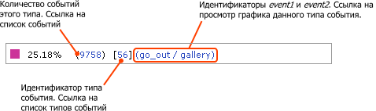

Эта форма отображает круговую диаграмму, показывающую количество событий того или иного типа в общем объеме событий.
| Параметр | Описание |
|---|---|
| Период | Период времени, за который требуется вывести диаграмму. |
| Типы событий | В этом списке можно выбрать типы событий, которые требуется отобразить на
диаграмме. Для выбора нескольких событий
удерживайте клавишу Ctrl. Кнопка Добавить открывает окно со списком событий для выбора. Кнопка Удалить исключает выбранные события из списка. |
| Показать все условия | Отражает все поля фильтра. |
| Скрыть все условия | Скрывает все поля фильтра, кроме полей по умолчанию. |
Чтобы отобразить данные с учётом фильтра, нажмите на кнопку Найти. Для отображения всех данных нажмите на кнопку Отменить.
Справа от диаграммы находится ее легенда, содержащая важную информацию. Легенда позволяет не только идентифицировать сегменты диаграммы, но и открывать формы с дополнительной информацией.
| © «Битрикс», 2001-2008, «1C-Битрикс», 2008 | 1С-Битрикс: Управление сайтом |